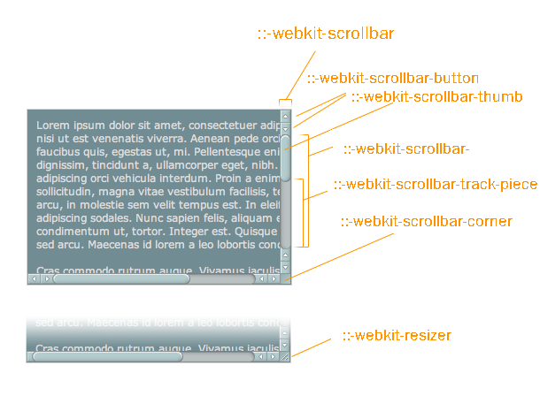
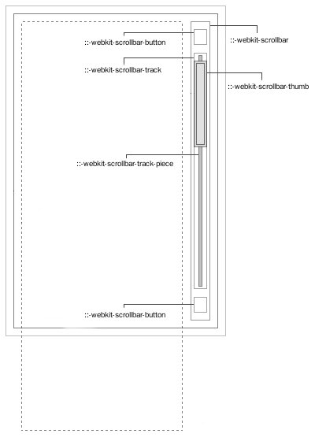

WebKit now supports styling of the scrollbars in overflow sections, listboxes, dropdown menus and textareas. [1]
源于浏览器厂商的各自为政，所以直至目前为止兼容所有浏览器的滚动条样式尚不存在，CSS3的推广使这种状况有所缓减，但有什么用呢(。・`ω´・)。webkit支持相关的|::-webkit-scrollbar等伪类，可以替换webkit默认的滚动条样式从而进行自定义样式渲染，我先假定一个红橙黄绿青蓝紫的颜色配色方案来区分滚动条的组成部分。
| 伪类+伪元素 | 背景颜色 |
|---|---|
| ::-webkit-scrollbar | ████ Black |
| ::-webkit-scrollbar-button:start:decrement | ████ Red |
| ::-webkit-scrollbar-button:vertical:start:increment | ████ Orange |
| ::-webkit-scrollbar-track-piece:vertical:start | ████ Yellow |
| ::-webkit-scrollbar-thumb:vertical | ████ Green |
| ::-webkit-scrollbar-track-piece:vertical:end | ████ Lime |
| ::-webkit-scrollbar-button:vertical:end:decrement | ████ Navy |
| ::-webkit-scrollbar-button:end:increment | ████ Purple |
| ::-webkit-scrollbar-track | ████ Fuchsia |
| ::-webkit-scrollbar-corner | ████ Gray |
| ::-webkit-resizer | ████ Maroon |
具体实现如下：
可以看到整个滚动条拥有一个黑色的滚动条背景，在此基础上又在上一层粘附滚动按钮和轨道，再细分即按钮碎片和滚到碎片、滑块等。
| 伪类 | 描述 |
|---|---|
| ::-webkit-scrollbar | 滚动条整体 |
| ::-webkit-scrollbar-button | 滚动条两端按钮 |
| ::-webkit-scrollbar-track | 外层轨道 |
| ::-webkit-scrollbar-track-piece | 内层轨道 |
| ::-webkit-scrollbar-thumb | 拖动条 |
| ::-webkit-scrollbar-corner | 边角 |
| ::-webkit-resizer | 定义右下角拖动块的样式 |

图片源于css-tricks网站内CHRIS COYIER的文章Custom Scrollbars in WebKit，略有修改。
这个实例源于trac webkit网站的Dave Hyatt在2009年写的一个官方示例[2]，额距今大约7年前。。。
CSS3标准新增了一些其他伪类，关于这些可以参考Selectors Level 3。
::-webkit-scrollbar {
width: 16px;
height: 16px;
}
::-webkit-scrollbar-button:start:decrement,
::-webkit-scrollbar-button:end:increment {
display: block;
}
::-webkit-scrollbar-button:vertical:start:increment, ::-webkit-scrollbar-button:vertical:end:decrement {
display: none;
}
::-webkit-scrollbar-button:end:increment {
background-image: url(../images/scroll_cntrl_dwn.png);
}
::-webkit-scrollbar-button:start:decrement {
background-image: url(../images/scroll_cntrl_up.png);
}
::-webkit-scrollbar-track-piece:vertical:start {
background-image: url(../images/scroll_gutter_top.png), url(../images/scroll_gutter_mid.png);
background-repeat: no-repeat, repeat-y;
}
::-webkit-scrollbar-track-piece:vertical:end {
background-image: url(../images/scroll_gutter_btm.png), url(../images/scroll_gutter_mid.png);
background-repeat: no-repeat, repeat-y;
background-position: bottom left, 0 0;
}
::-webkit-scrollbar-thumb:vertical {
height: 56px;
-webkit-border-image: url(../images/scroll_thumb.png) 8 0 8 0 stretch stretch;
border-width: 8 0 8 0;
}
根据伪类重定义样式，参考于almaer：
| 伪元素 | 中文描述 | 英文描述 |
|---|---|---|
| :horizontal | 横向滚动条 | The horizontal pseudo-class applies to any scrollbar pieces that have a horizontal orientation |
| :vertical | 竖向滚动条 | The vertical pseudo-class applies to any scrollbar pieces that have a vertical orientation |
| :decrement | 具有向下箭头或向右箭头按钮的滚动条) | The decrement pseudo-class applies to buttons and track pieces. It indicates whether or not the button or track piece will decrement the view’s position when used (e.g., up on a vertical scrollbar, left on a horizontal scrollbar) |
| :increment | 具有向上箭头或向左箭头按钮的滚动条) | The increment pseudo-class applies to buttons and track pieces. It indicates whether or not a button or track piece will increment the view’s position when used (e.g., down on a vertical scrollbar, right on a horizontal scrollbar) |
| :start | 部件在滑道前方的滚动条 | The start pseudo-class applies to buttons and track pieces. It indicates whether the object is placed before the thumb |
| :end | 部件在滑道后方的滚动条 | The end pseudo-class applies to buttons and track pieces. It indicates whether the object is placed after the thumb |
| :double-button | 在滑道两端同时具有上下箭头按钮 | The double-button pseudo-class applies to buttons and track pieces. It is used to detect whether a button is part of a pair of buttons that are together at the same end of a scrollbar. For track pieces it indicates whether the track piece abuts a pair of buttons |
| :single-button | 在滑道两端只有单个箭头按钮的滚动条 | The single-button pseudo-class applies to buttons and track pieces. It is used to detect whether a button is by itself at the end of a scrollbar. For track pieces it indicates whether the track piece abuts a singleton button |
| :no-button | 滑道两端没有箭头按钮的滚动条 | Applies to track pieces and indicates whether or not the track piece runs to the edge of the scrollbar, i.e., there is no button at that end of the track |
| :corner-present | 横竖交点存在一个公共角落的滚动条 | Applies to all scrollbar pieces and indicates whether or not a scrollbar corner is present |
| :window-inactive | 当前窗口处于未激活状态的滚动条 | Applies to all scrollbar pieces and indicates whether or not the window containing the scrollbar is currently active. (In recent nightlies, this pseudo-class now applies to ::selection as well. We plan to extend it to work with any content and to propose it as a new standard pseudo-class.) |
| :enabled | - | - |
| :disabled | - | - |
| :hover | - | - |
| :active | - | - |
这里我对美学意义上的作图功力尚浅（画的图惨不忍睹。。），所以直接安利了一张jQuery custom content scroller官网[3]里的关于浏览器scrollbar的图片，先把坑位占上再慢慢填图。

这些样式里或多或少都用到了一些伪元素：
| 类名 | 描述 |
|---|---|
| scrollbar-arrow-color | 三角箭头的颜色 |
| scrollbar-face-color | 立体滚动条的颜色，包括箭头部分的背景色 |
| scrollbar-3dlight-color | 立体滚动条亮边的颜色 |
| scrollbar-highlight-color | 滚动条的高亮颜色 |
| scrollbar-shadow-color | 立体滚动条阴影的颜色 |
| scrollbar-darkshadow-color | 立体滚动条外阴影的颜色 |
| scrollbar-track-color | 立体滚动条背景颜色 |
| scrollbar-base-color | 滚动条的基色 |
关于这些类，我找到一个很好玩得flash动态的展示它们的作用。
(未完待续)